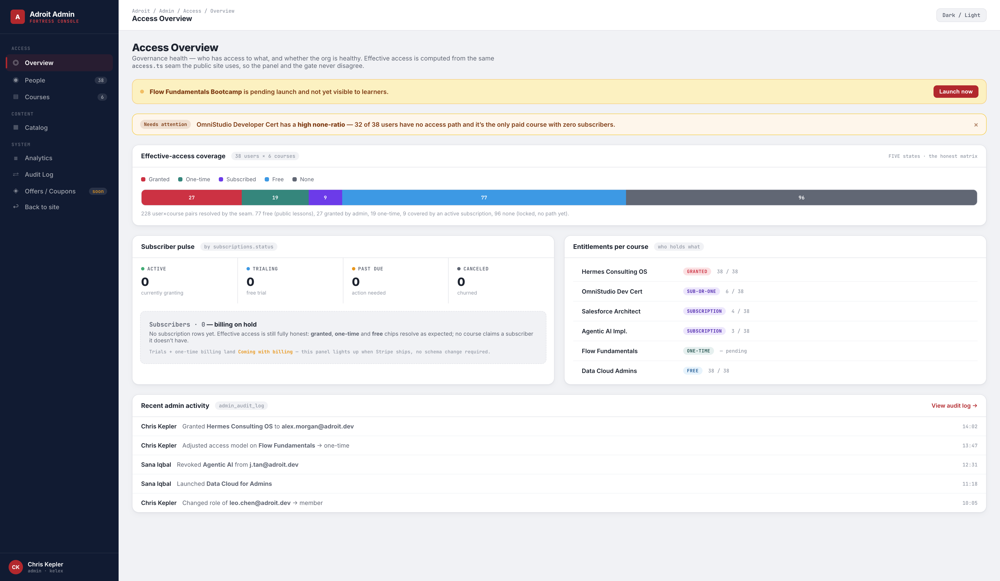
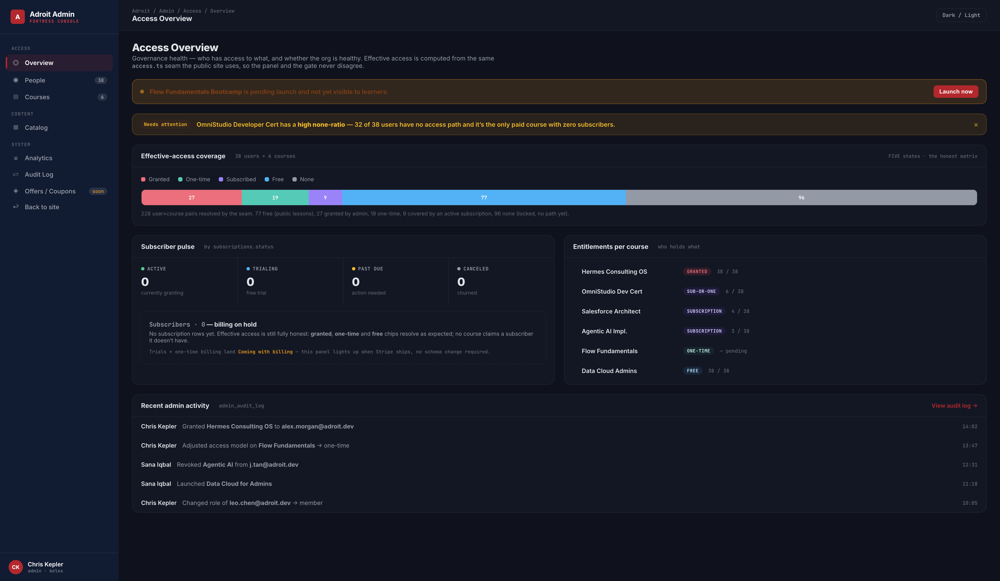
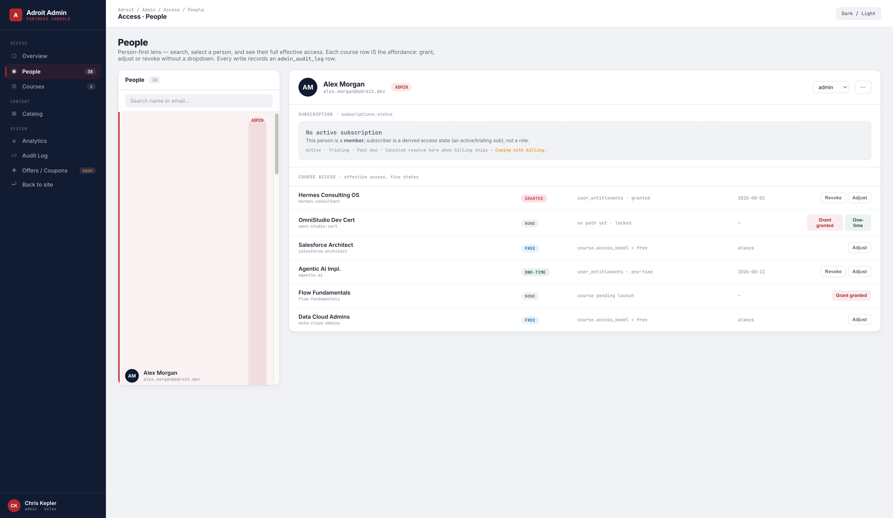
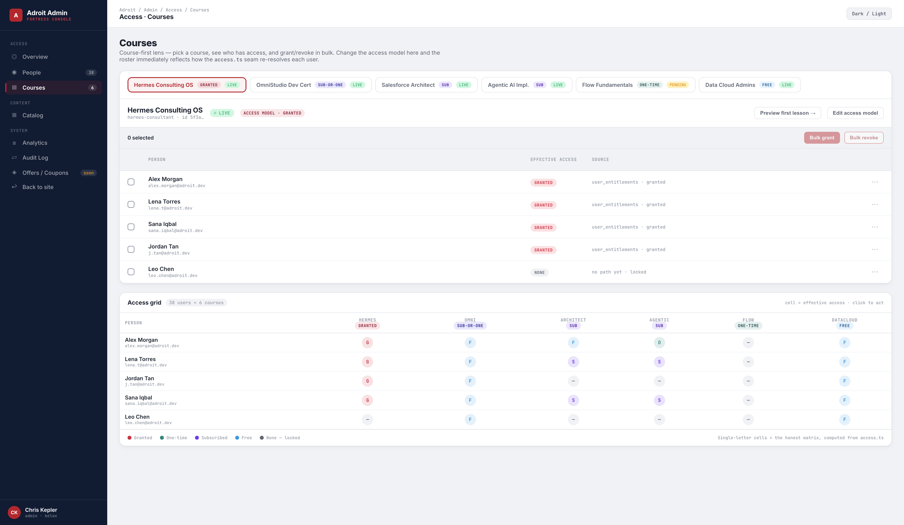
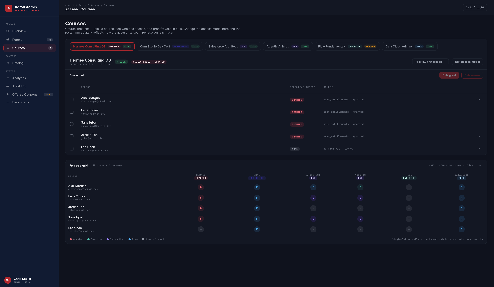
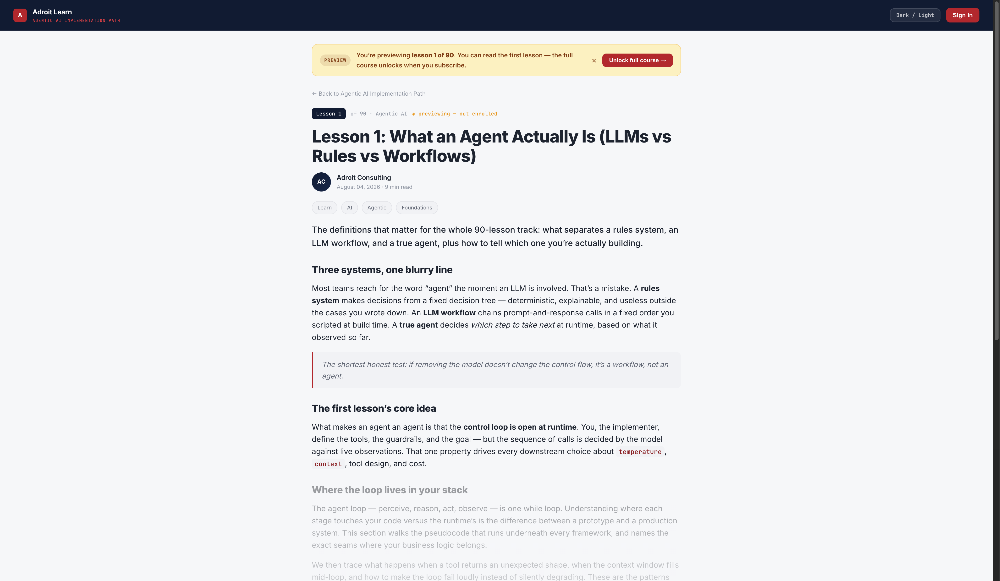
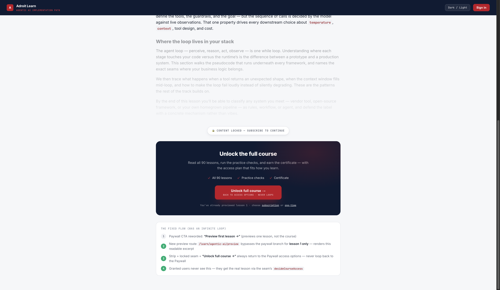

Design System Report
Adroit Admin Experience Redesign — Access
Job-organized admin IA (Access · Content · System) with an honest, five-state effective-access model computed from the access.ts seam. Composed from the approved discovery brief (t_19aaee7f). Operate surface (Monitor secondary on Overview).
Operate / Monitort_e0eef05c4 mockupsdark modea11y AA
1Effective-Access Five-State Chip Language
The honest replacement for the old G/P-only matrix. Every user×course pair resolves to exactly one of five states via the existing seam. Never “empty = no access”.
Admin-granted entitlement · user_entitlements.source=granted
Purchased / one-time entitlement · source=one-time
Active/trialing subscription grants access · subscriptions.status
Course access_model = free → everyone has it
No entitlement, no sub, not free → locked
2Governance Signals
Subscriber pulse by subscriptions.status + access-gap call-out. All ship an html.dark remap.
Payment overdue — attention
Gap call-out
bg #FFF7ED · border #FCD34D · ink #92400E“Needs attention” strip for high none-ratio / paid-with-zero-subs
Preview strip
bg #FEF3C7 · ink #92400EAmber “You’re previewing lesson 1 of N” band
3Component Gallery
High-fidelity mockups rendered and verified in-browser. Dark mode on all new surfaces.

Access Overview — Monitor-in-Operate governance health: effective-access coverage bar (5 states), subscriber pulse (0 — billing on hold), pending-launch, access-gap call-out, recent audit.

Access Overview · dark — same governance health with the html.dark remap.

Access · People — person-first Access Panel: role, five-state chips per course, Grant/Revoke/Adjust inline (no dropdown), per-user subscription panel (honest empty today).

Access · Courses — course-first roster + bulk grant/revoke + the signature AccessGrid (single-letter G/O/S/F/— cells).

Access · Courses · dark — roster + AccessGrid in dark mode.

Preview First Lesson · top — amber preview strip, lesson-1 readable excerpt (Decide/Learn).

Preview First Lesson · CTA — locked seam + navy “Unlock full course →” CTA that returns to Paywall access options (never loops).
4Responsive Behavior
| Breakpoint | Behavior |
|---|
| ≥1240px | People split (roster 380px + panel) full; AccessGrid matrix full width |
| ≤1240px | People split collapses to single column; course action column hides |
| ≤1100px | Overview pulse → 2-col; entitlements/audit stack; roster source column hides |
| Mobile | Sidebar remains fixed 248px on desktop admin; content single column |
| Component | Notes |
|---|
| AccessGrid | Overflow-x scroll with min-width 760px; column headers carry access-model chip |
| Coverage bar | Flex with min segment width 26px; legend wraps |
| Roster rows | --admin-row-h 56px; source column hidden on ≤1100px |
5State Matrix
| Component | Default | Hover | Selected | Empty | Error / Destructive |
|---|
| EffectiveAccessChip | tinted pill, dark hue | — | — | “None — locked” grey | — |
| AccessGrid cell | 26px circle, letter | scale 1.15 + red ring | row inset red ring | “—” none cell | cell click opens action popover |
| Roster row | border-bottom | row-hover tint | red @ 6% + inset 3px | 0 rows | Revoke requires confirm + audit toast |
| Subscriber pulse | status counts | — | — | “Subscribers · 0 — billing on hold” | past_due amber |
| Preview strip | amber band | — | — | — | — |
| Toast | navy, red check | — | — | — | auto-dismiss 3s |
6Handoff Notes for Steel
Build from these mockups + design/discovery/admin-experience-tokens.css.
1. IA rework: regroup the admin sidebar into Access (Overview / People / Courses) · Content (Catalog) · System (Analytics / Audit / Offers·Coupons). Kill the standalone Matrix page — its job is absorbed into People + Courses sharing the AccessGrid component.
2. Honest effective access: compute the five-state chip from the SAME access.ts seam as the public side (or a sibling admin loader) so the panel and gate never disagree. Never render empty = no access; free and subscribed must resolve.
3. People lens: per-user Access Panel — role + per-course chips + Grant granted / Grant one-time / Revoke / Adjust inline. Every write → admin_audit_log row + toast. Subscription panel renders as the honest “No active subscription / Coming with billing” empty state today.
4. Courses lens: course-first roster + AccessGrid + bulk grant/revoke (one audit row per user via /api/admin/entitlements/bulk). Changing access model re-resolves the roster immediately.
5. Preview-first-lesson flow: reword Paywall CTA to “Preview first lesson →”; add a lesson-1 preview variant route (/learn/[series]/preview or ?preview=1) bypassing the paywall branch for lesson 1 only, ending in “Unlock full course →” that returns to the Paywall access options — never loops back. Granted users get the real lesson.
6. Billing on hold — NO build: coupons/trials/one-time are reserved empty-state slots only (“Coming with billing”). Do not imply billing is live. Future deltas (coupons tables, nullable subscriptions.stripe_id) are design-time notes for brainiac only.
7. Dark mode: every new surface ships the html.dark remap (tokens css). Motion respects prefers-reduced-motion.